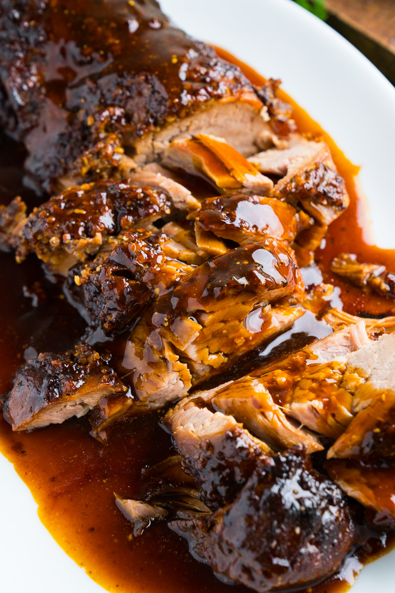

Honey Parmesan Pork Tenderloin

There is nothing like a good Honey Parmesan Pork Tenderloin. I don't know how I could have survived without having this recipe in my life. I will share it with you, hopefully to brighten up your life as well!
WARNING: A Slow-cooker is a MUST.
Ingredients
- Boneless pork loin roast
- Parmesan cheese
- Honey
- Soy sauce
- Dried basil
- Dried oregano
- Garlic
- Olive oil
- Salt
- Cornstarch
- Chicken broth
- Sugar, optional